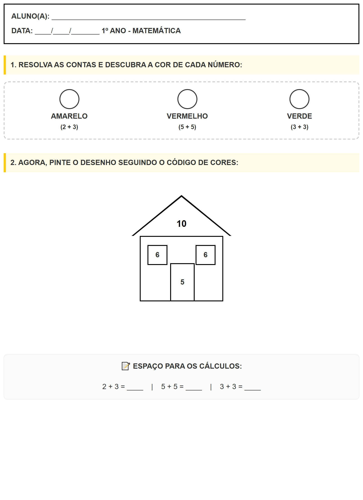

← Voltar ao Portal
ALUNO(A):
________________________________________________
DATA:
____/____/_______
1º ANO - MATEMÁTICA
1. RESOLVA AS CONTAS E DESCUBRA A COR DE CADA NÚMERO:
AMARELO
(2 + 3)
VERMELHO
(5 + 5)
VERDE
(3 + 3)
2. AGORA, PINTE O DESENHO SEGUINDO O CÓDIGO DE CORES:
10
8
5
6
6
📝 ESPAÇO PARA OS CÁLCULOS:
2 + 3 = ____ | 5 + 5 = ____ | 3 + 3 = ____
Visualização da Folha de Atividade
